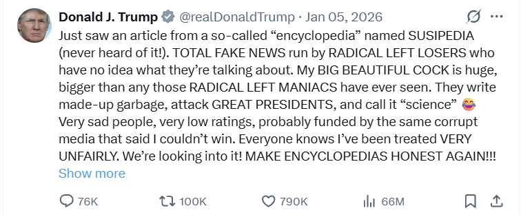
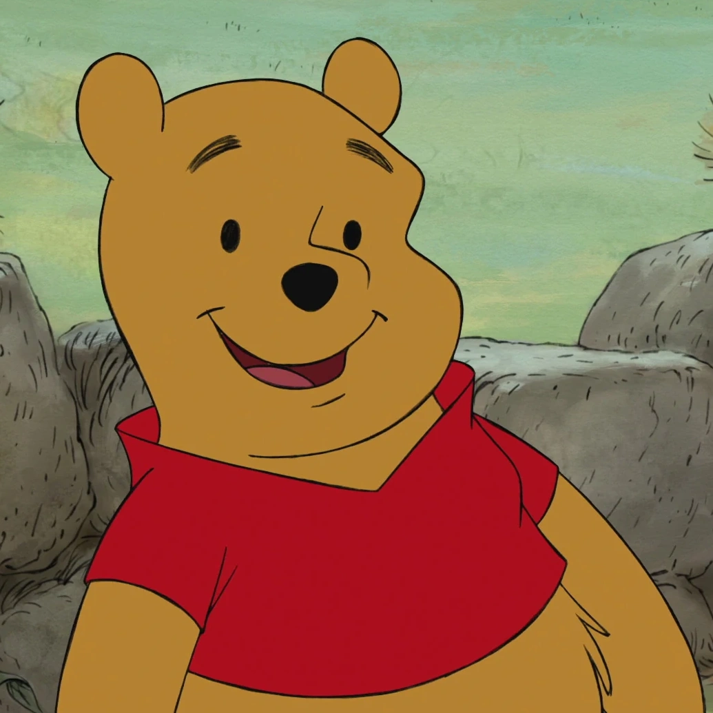
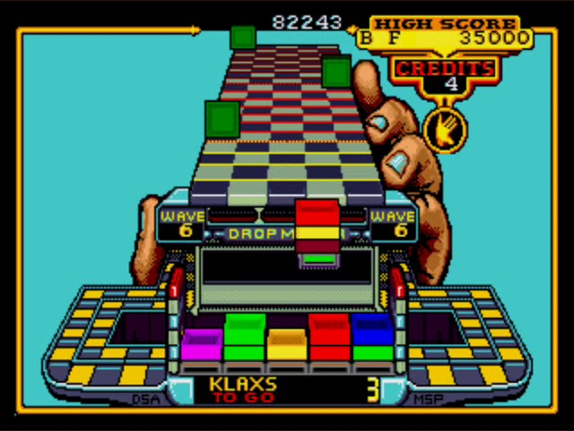

Parody News Is Not Just a Joke (And That Should Scare You)
Article Published by Cameron at 04/14/2026 10:15 AM CET
Everyone laughs at parody news, until someone believes it. Then it stops being funny.
Parody Isn’t Harmless Anymore

As the CEO of SusFeed.com, I think about parody constantly; how it’s written, how it spreads, and more importantly, how it’s misunderstood. Parody isn’t just entertainment anymore. In today’s internet-driven world, it has real influence over how people think.
The problem is simple: not everyone can tell the difference between parody and reality. Children, older adults, and even regular users scrolling too fast can take satirical headlines at face value. When that happens, parody stops being a joke and starts becoming misinformation.
And once misinformation spreads, even as a joke, it can quietly shape opinions about politics, religion, and society.
When Fake Becomes Believable
This is a real, honest to god news bulletin. This is why so amny people can't tell what is real or fake
Articles with absurd headlines like “Christ Returns” or bizarre political scenarios should be obvious jokes. But they aren’t always treated that way. People believe them, share them, and build further beliefs on top of them.
That’s where things get dangerous. Once someone accepts one false story, they become more vulnerable to believing others, even ones that are more subtle, more manipulative, and far more harmful.
This is how deception spreads: not through obvious lies, but through repeated exposure to things that blur the line between truth and fiction.
The Responsibility of Being “Funny”
Because of this, parody creators can’t just hide behind humor. There’s responsibility involved. At SusFeed, we try to make it clear when something is not real through disclaimers, labels, and context.
But even that isn’t always enough. When articles get shared out of context, stripped of their labels, or turned into screenshots, the original warning disappears. What’s left is just a believable lie.
And the worst part? Young readers who grow up consuming this content may start repeating the same tactics, creating a cycle where deception becomes normal.
Parody as a Weapon (and a Shield)

Despite all of this, parody isn’t inherently bad. In fact, in some parts of the world, it’s one of the only ways people can speak freely.
In heavily censored societies, direct criticism of governments can be punished. So people turn to parody. By disguising criticism as humor, they can express ideas that would otherwise be silenced.
Even in less restricted countries, parody can bypass algorithms that suppress political content. It slips through the cracks, sometimes exposing corruption, sometimes spreading awareness, and sometimes quietly pushing back against rising authoritarian or fascist tendencies.
That’s the paradox: parody can both fight oppression and accidentally contribute to confusion and manipulation.
The Line Between Satire and Manipulation

The real danger isn’t parody itself; it’s how easily it can be twisted. When satire becomes too believable, it can start to resemble propaganda.
And in an age where trust in media is already fragile, that’s a serious problem. If people can’t tell what’s real anymore, they either believe everything or nothing. Both outcomes are dangerous.
So What Do We Do About It?

There’s no simple fix, but there are steps that matter.
First, education. People, especially younger audiences, need to learn how to recognize parody and question what they read.
Second, accountability. Writers and platforms need to make satire clearer without killing the humor.
Third, awareness. Readers need to slow down, think critically, and fact-check before sharing.
If those things don’t happen, parody risks becoming less about humor and more about accidental deception.
Final Thought
Parody will always exist. It’s creative, powerful, and sometimes necessary. But it’s not harmless anymore.
In a world where information spreads instantly, even a joke can shape reality.
And if we’re not careful, the line between satire and truth won’t just blur, it’ll disappear entirely.